Stacked Bondhus fans
Denser fan revision. Small keys tuck individually into the spaces above and behind the larger tools. The longer shafts retain their independent angles and staggered ends. Contact-limited placement keeps the separate tip, funnel and hand-clearance rules below.
Metric · Inch · Torx · Vertical stack
Holder width is down 26% for inch, 21% for metric and 46% for Torx. The metric holder is 16.5 mm taller; the inch holder is 11.5 mm shorter. All three have smaller front bounding areas. This is a checked compact arrangement, not a claim of a global packing optimum.
13190 inch · 10 tools
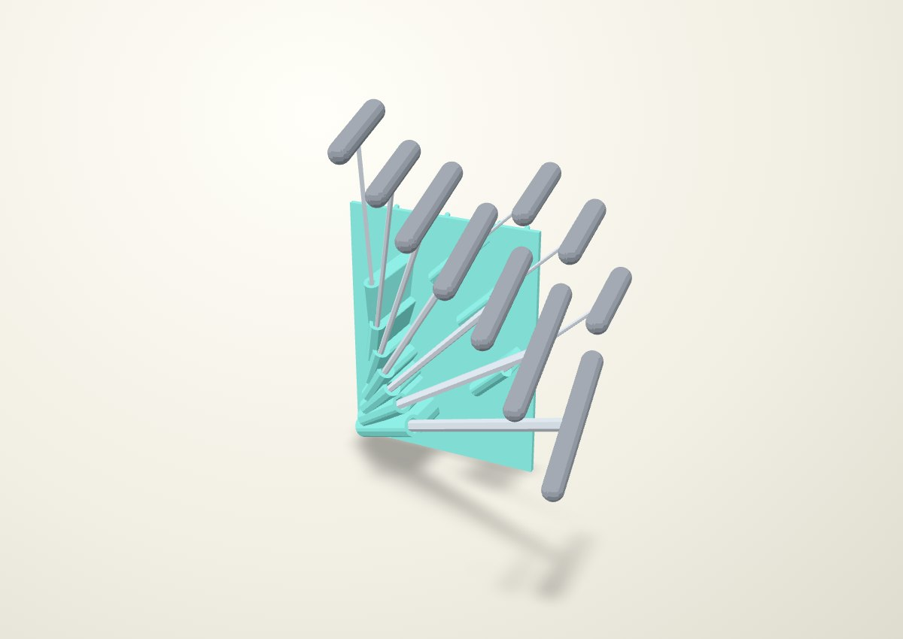
Front and plan views
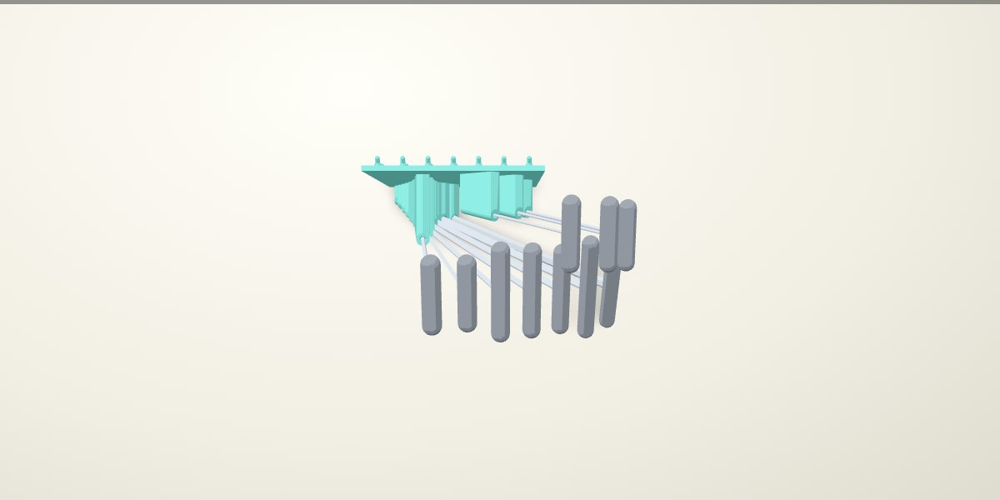
13189 metric · 8 tools
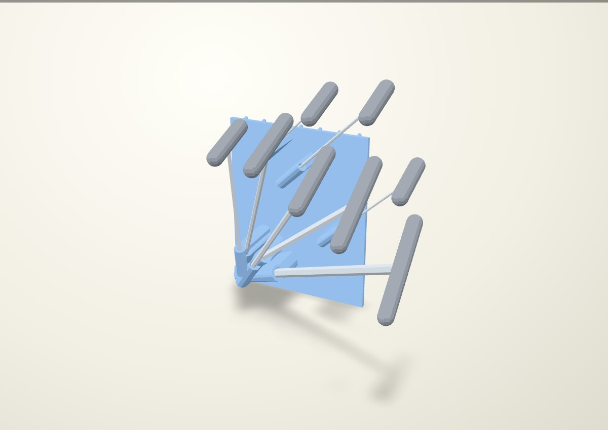
Front and plan views
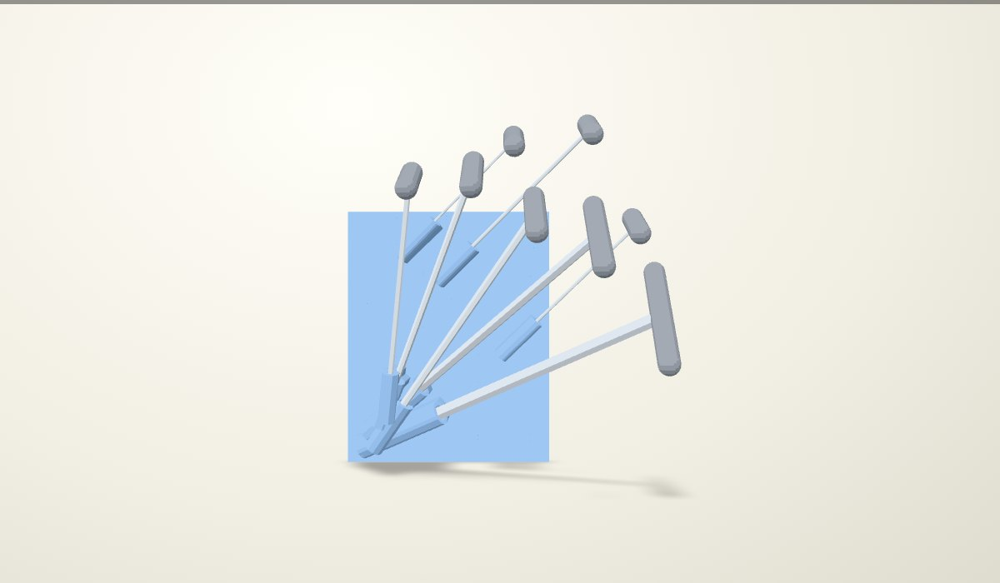
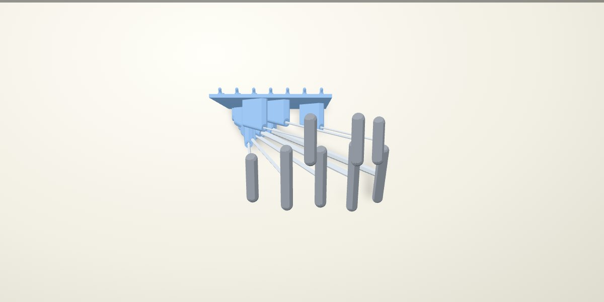
33034 Torx · 8 tools
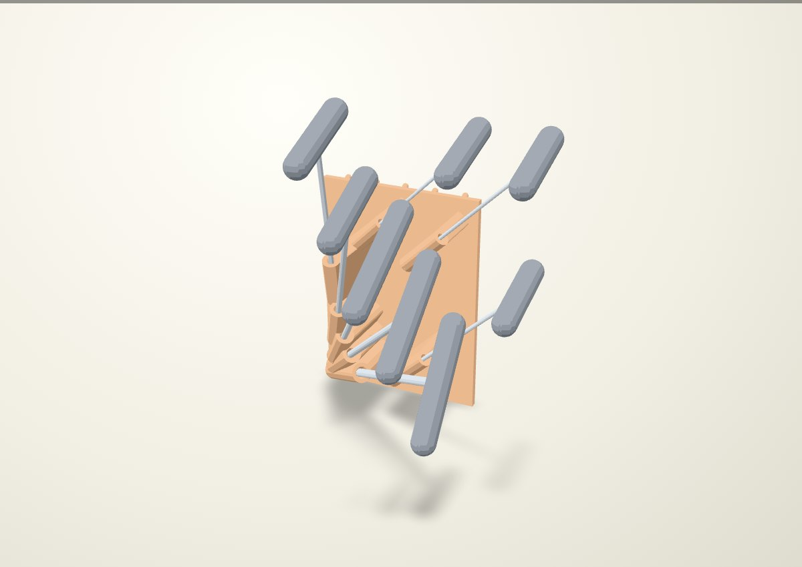
Front and plan views
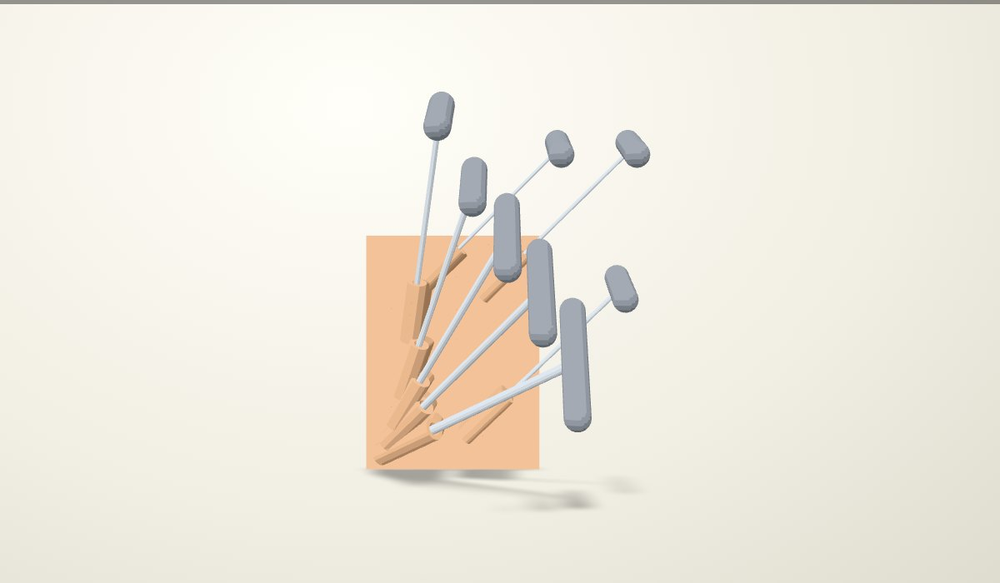
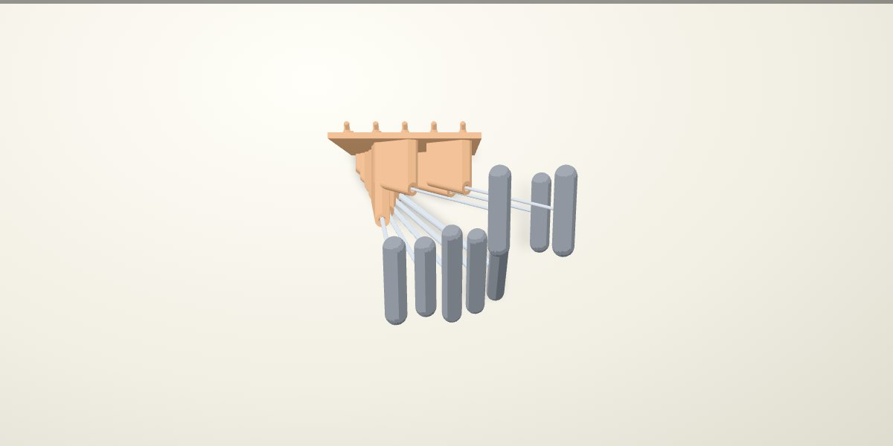
Three distinct clearance rules
- Near the buried ends: approximately 1 mm between the steel shaft envelopes. Socket clearance consumes part of this distance; the shared plastic web widens as the shafts diverge.
- At each entrance: the full chamfer adds 3 mm along the shaft and opens 1.5 mm per flat. Mouth envelopes have a separate 2 mm spacing target.
- At the handles: the axial socket-release stroke and a 50 mm diameter grasp envelope are checked with the other tools left in place.
The selected 3C / 5C fit remains +0.38 mm total across flats. Straight engagement remains max(40 mm, 8× shaft size), plus the lead-in, with a square stop and 1 mm vent. Other sizes and new print angles need their own fit confirmation. Torx guides use circular catalogue envelopes and have no demonstrated rotational registration.
Vertical stack
Inch below metric below Torx. Inch to metric: 279.4 mm (11 rows). Metric to Torx: 228.6 mm (9 rows). Each gap is calculated separately for the represented tools and socket-release strokes. The previous layout used 228.6 mm at both levels; the narrower arrangement needs two extra rows at the lower gap.
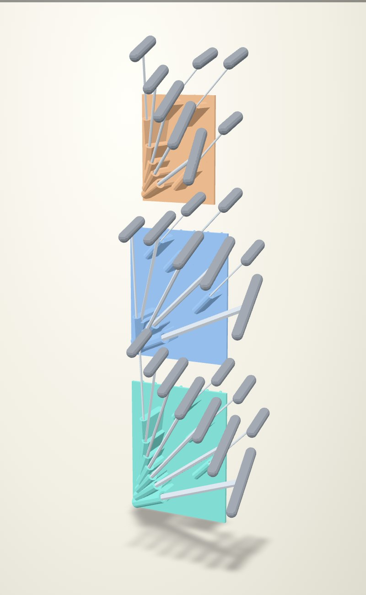
Empty holders
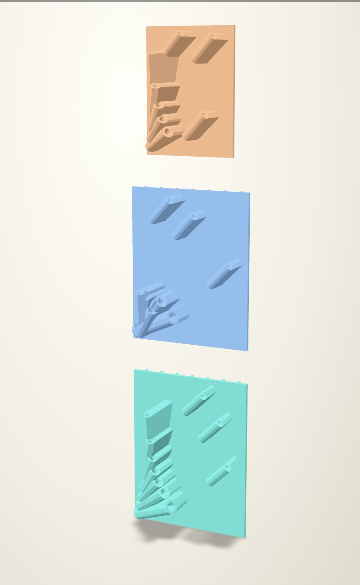
| Set | Width: old → new | Depth | Height |
|---|---|---|---|
| 13190 inch · 10 tools | 248 → 184 | 91.3 | 239.2 |
| 13189 metric · 8 tools | 234 → 184 | 90.9 | 229.2 |
| 33034 Torx · 8 tools | 250 → 134 | 94.0 | 181.1 |
Native cross-sections
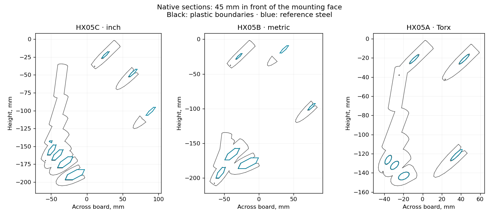
Review evidence
The stored-tool, grasp and axial-release envelope screen passes for all 26 tools. The conservative native axial socket-release and grasp checks pass. Native solid validity and stored tool/body overlap are checked during construction. Tool shapes are catalogue envelopes with an assumed 18 mm grip diameter, not measured manufacturer geometry.
The subsequent free-hand removal maneuver is not modelled. Thin-web printability, supports, whole-rack installation motion, stiffness and physical load capacity remain unqualified. Previous FEA and installation evidence do not transfer. This page provides renders, not approved print files.